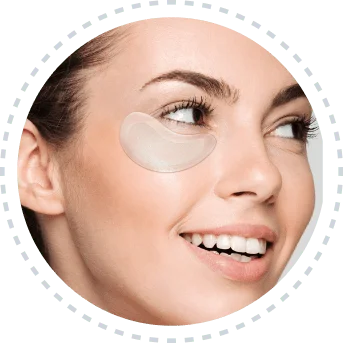
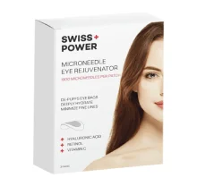
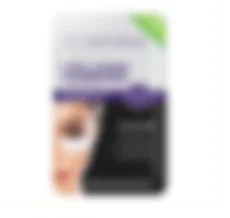

Oboseala ochilor și Pungi sub ochi- Plasturi cu micro-ace pentru ochi
Excelent
8,152 de recenzii pe
Trustpilot
Plasturii inovativi conțin mai mult de 1900 de micro-ace care se dizolvă direct în epidermă, acolo unde sunt cele mai eficiente în reducerea cearcănelor și a pungilor de sub ochi.
Reduce cearcănele și luminează pielea
Reduceți pungile de sub ochi și hidratați profund
Reduce liniile fine, ridurile și lăsările ochilor (picioarele vrăbiuței)
Total:
150 LEI
90 LEI
Economisiti 60 LEI

Toate tranzacțiile sunt securizate și criptate
Livrare estimată în 3-5 zile lucrătoare
Văzut pe
Salvatorul de sub ochi
Vitamina C
Ajută la reducerea cearcănelor și luminează tenul.
Acidul hialuronic
Oferă hidratare profundă și ajută la reducerea pungilor de sub ochi.
Retinolul
Vizează și reduce liniile fine, ridurile și lăsările ochilor.
Piele mai sănătoasă și vizibil mai tânără

Salvatorul tău pentru zona ochilor:
Experimentează puterea revigorantă a plasturilor noștri Eye Rejuvenator, care acționează pentru a reduce umflăturile și a ilumina pielea delicată de sub ochi, lăsându-te să arăți odihnită și tânără. Aplică-i sub ochi și lasă-i timp de 30 de minute – atât!
Pachete pentru ochi — reinventate:
Tehnologia inovativă din spatele pachetelor noastre pentru ochi, care includ 1900 de micro-ace auto-dizolvante ce livrează eficient formula noastră restauratoare pentru piele adânc în epidermă, acolo unde sunt cele mai eficiente în reducerea cearcănelor și a pungilor de sub ochi.
Nu mai obosiți ochii:
Bucurați-vă de versatilitatea petelor noastre pentru ochi, care vizează nu doar zona din jurul ochilor, dar și lacrimile, liniile din colțurile ochilor și alte zone ale feței predispuse la riduri, asigurând o rejuvenare completă pentru un ten radiant și frumos.
nu există comparație
Nu te vei mai întoarce niciodată la plasturii obișnuiți pentru ochi!

S+P Microace
1900 microace
Aprobat de Dermatolog
Livrați ingrediente active sub piele
Fără cruzime
Rezultate dovedite

Regulamentar
Plasture ocular obișnuit
Dubios
Ingredientele rămân pe suprafața pielii
Testarea pe animale
Fără garanții
AVANTAJUL SWISS+POWER
recenzii recente
Recenzii ale clienților
Ai întrebări? Avem răspunsuri
Plasturii pot fi reutilizați?
Nu, fiecare plasture este de unică folosință deoarece conține o formulă activă care se dizolvă în piele.
Câți plasturi sunt în cutie?
Fiecare cutie conține 3 perechi de plasturi.
Cât de des ar trebui să îi folosesc?
Se recomandă utilizarea de 2-3 ori pe săptămână, iar apoi săptămânal pentru a menține pielea de sub ochi sănătoasă și strălucitoare.
Cât timp ar trebui să îi port?
Folosiți timp de cel puțin 30 de minute sau peste noapte pentru cele mai bune rezultate.
Microace? Este dureros?
Plasturii noștri pentru ochi sunt concepuți cu cele mai mici microace de pe piață, care provoacă foarte puțin disconfort la aplicare. Utilizatorii le consideră nedureroase.
Sunt mai buni decât plasturii obișnuiți?
Plasturii obișnuiți (și cremele) rămân doar la suprafața pielii, unde au un efect redus asupra cearcănelor și pungilor de sub ochi. Plasturii pentru ochi cu microace se dizolvă sub stratul pielii, livrând formula activă acolo unde este cel mai necesar și mai eficient pentru a îmbunătăți sănătatea și aspectul pielii.